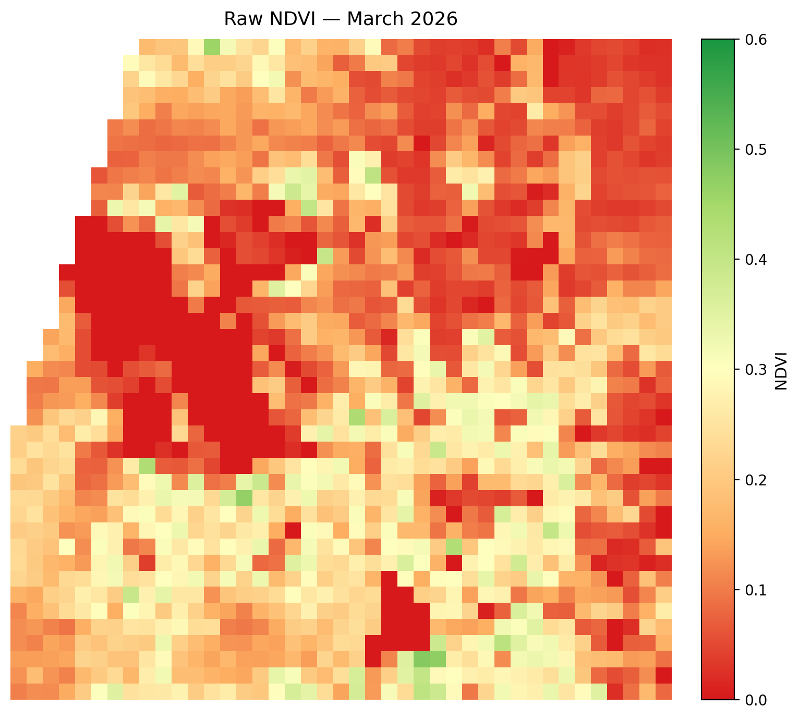
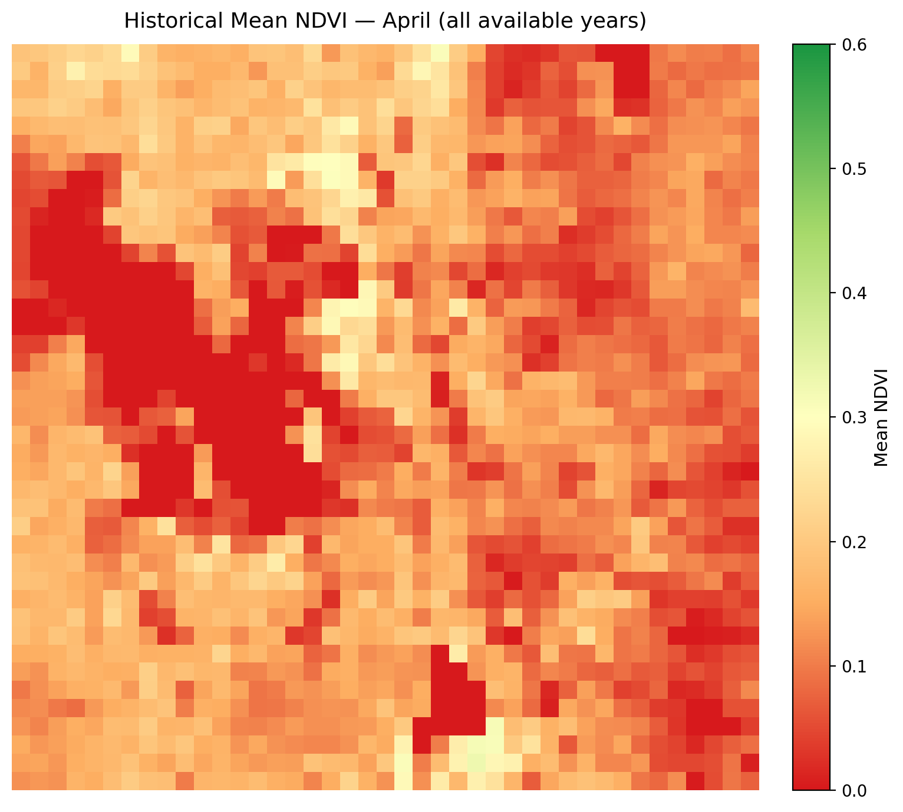
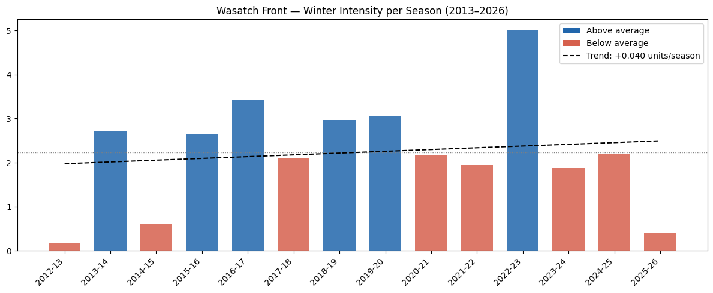

Monthly Report · Issue 04
March 2026
Vegetation dynamics across the Wasatch Front
By Scott Vars
Vegetation dynamics across the Wasatch Front
By Scott Vars
Raw vegetation index across the Wasatch Front for March 2026. Much of the Wasatch Front lay within the 0.1-0.4 range, with small, individual outliers at upwards of 0.5. The lake values (Great Salt Lake and Utah Lake), are both at 0 as normal. We are starting to see a green-up in vegetation, with numerous pockets of green showing up surrounding the Salt Lake Valley and Utah lake areas. However, typically we don't see this much green until later in the year, usually in late April or May. Shown below the March NDVI Map shows the historical mean map for April over the entire dataset. This map represents the most "average" April across the time period, and we can see that even this map doesn't have as much vegetation as March 2026. This is suggesting a much earlier green-up and vegetation blooming after a weak winter season.


NDVI was significantly higher for March 2026, with an average increase in NDVI of about +.058. This is quite an increase from last the historical mean, showing significant growth in vegetation, especially around the Utah Lake/Provo areas. Some mountainous areas also showed significant increase.
The increase is likely driven by an early green-up from rising temperatures, as due to the anomalously poor winter we've had, vegetation is starting to spring up again.

NDVI increased overall from February to March, with a mean change of +0.0387 across the Wasatch Front region. The most substantial gains occurred in the western portions of the study area, particularly in areas west of and around the Great Salt Lake, where large contiguous patches of strong NDVI increase are visible. This likely reflects an early spring green-up in the lower-elevation desert and wetland areas as temperatures warmed and residual moisture from February precipitation was utilized by vegetation. The upper portions of the Wasatch Front also showed moderate gains, consistent with snowmelt exposing and activating vegetation in mid-elevation zones. In contrast, scattered patches of NDVI decrease are visible in the central portions of the map, which may correspond to urban heat island effects, areas where snowpack persisted and masked vegetation, or localized drying following earlier moisture pulses. The pattern of gains being strongest in the west and losses concentrated in the central corridor suggests a spatially variable transition into spring, with lower and more arid areas greening up ahead of the higher-elevation urban foothills.
The decrease in patches across the Front could be due to scattered snowpack or masked vegetation, or urban heat island effects in places such as the Park City area. Overall, however, vegetation greatly increased with an incoming green-up from February.

The sharp increase over the actual lake area of the Great Salt Lake and Bear Lake and the small increase upon the Utah Lake area are likely due to remote sensing artifacts, so please disregard. They are likely not real readings and when looking at the raw NDVI maps, they did not change at all.
Compared to March 2025, we can see a very significant increase in vegetation, with an overall mean change of about .073. This is a notably large year-over-year gain, suggesting that March 2026 experienced considerably earlier or more widespread green-up than the same month last year. Spatially, the increase is not uniform. The majority of the map is dominated by blue which indicates positive NDVI change particularly across the central and eastern portions of the region, which correspond to the Wasatch Front foothills and mountain-adjacent valleys. The eastern mountain areas show moderate but consistent gains, likely reflecting earlier snowmelt exposure and early vegetation response. Overall, the year-over-year picture for March 2026 is strongly positive, with widespread greening across the Wasatch Front and valley regions. This aligns with the broader pattern of an anomalously early and warm spring, with vegetation responding ahead of schedule relative to the 2025 baseline.

The 2025-2026 winter has officially come to an end, or at least in the context of the winter dormancy metric. The NDVI z-score for this month has (unsurprisngly, given the winter we've had) gone above the -0.5 score threshold, marking the end of the season, and solidifying it as one of the worst we've had in 13 years. We see a clear drop in the 2025-2026 season, even lower than the previous lowest in 2014-2015. Many times, the month of March would remain below the -0.5 threshold as seen in previous years, however due to the earlier green-up, this March is almost equivalent to late April or early May, showing a below-average and dry winter, creating a streak of three below-average winters in a row.

It may seem that the 2012-2013 season is the worst season on the chart, however due to Landsat 8 going into operation in March 2013, that is when this time series starts. Thus, the 2012-2013 season is reflecting data for ONLY March 2013, and not the full winter season. Disregard this result, as it is not an accurate reflection of the season.

The March 2026 Wasatch Watch report documents a striking early green-up across the Wasatch Front, with NDVI rising both month-over-month (+0.039 from February) and year-over-year (+0.073 from March 2025). Raw NDVI values for March 2026 already rival what is typically observed in late April or early May, a clear sign that vegetation is blooming well ahead of schedule. The seasonal anomaly map confirms March 2026 averaged approximately +0.058 above the historical March mean, with the most pronounced gains concentrated around the Utah Lake and Provo corridor. Month-over-month, the strongest increases occurred in lower-elevation desert and wetland areas west of and around the Great Salt Lake, where warming temperatures and residual February moisture drove rapid vegetation response. Scattered patches of NDVI decrease in the central corridor are attributed to lingering snowpack, masked vegetation, or urban heat island effects in areas such as Park City although these are localized relative to the broader regional increase.
The year-over-year comparison paints an equally striking picture, with widespread greening across the foothills and mountain-adjacent valleys reflecting an earlier and more extensive spring than March 2025. Anchoring all of these trends is the anomalously poor 2025–2026 winter, which officially ended its dormancy period this month when the NDVI z-score crossed above the −0.5 threshold — the benchmark used to mark the close of the winter dormancy season. The 2025–2026 winter now ranks as the worst on record in the 13-year Landsat 8 dataset, surpassing the previous low set in 2014–2015 and extending a streak of three consecutive below-average winter seasons across the Wasatch Front.
NDVI values derived from Landsat 8 TOA median composites at 5.5km resolution. Difference maps computed from raw NDVI prior to any normalization. Historical comparisons use the 2013–2026 Landsat archive.
Landsat 8/9 imagery courtesy of the U.S. Geological Survey via Google Earth Engine.
NOAA National Centers for Environmental Information, Monthly Climate Reports and drought summaries.